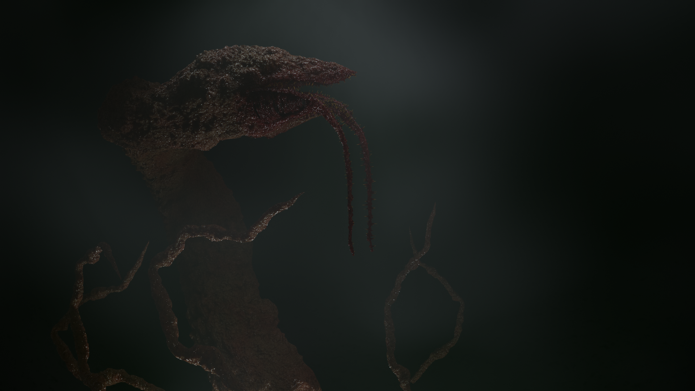

"Gravemind" character I modeled and rigged. 
"Infection form" character I modeled, rigged, animated, and textured for my game, "Sacrilege"
"Carrier" character I modeled, rigged, animated, and textured for my game, "Sacrilege"
(Still WIP.) Grunt model I modeled, rigged, and animated for my game, "Sacrilege" (Texturing unfinished, animations WIP)
"Cylon" character which I did NOT model, but I did re-rig and animate for a modding project in Garry's Mod